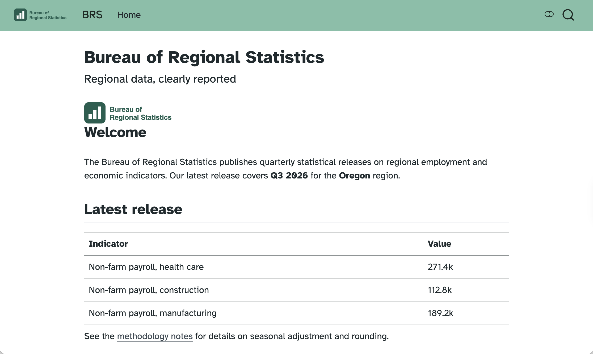
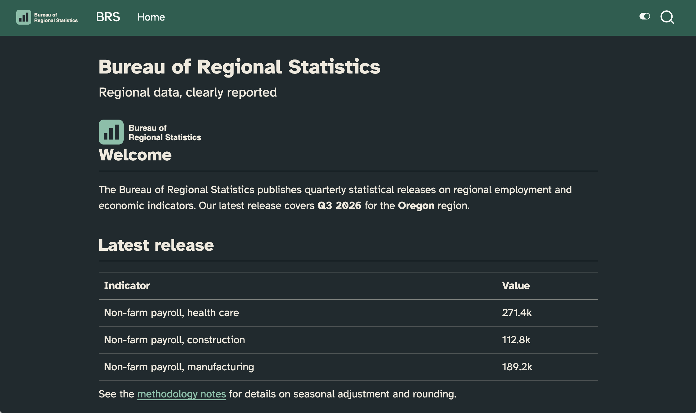
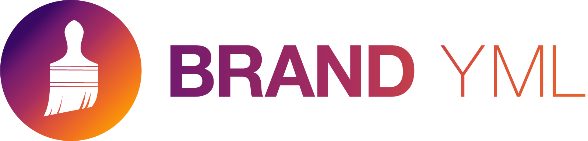
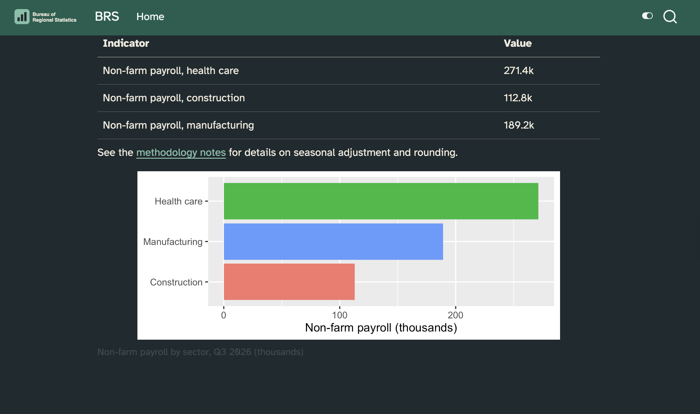

slate, solar, spacelab, superhero, united, vapor, yeti, zephyr
report.qmd
format:html:theme: flatly
But you don’t want a theme…
You want your theme


The same look, in how many places?
theme: — one SCSS file for html, another for revealjs
include-in-header: — fonts, again
mainfont:, colorlinks: — pdf has its own names
your plots — theme_*() in R, theme() in Python
and again in the next project
Five descriptions of one brand, each drifting on its own schedule.
_brand.yml

Unified branding with a simple YAML file
One file, written once, applied across Quarto formats — and beyond Quarto.
Two steps
Describe the brand in one _brand.yml.
Quarto applies it to almost every format.
No format-specific theming to write. No SCSS – unless you want to tweak bits of your document/website/slide deck brand doesn’t control via a YAML field.
Who reads _brand.yml?
flowchart LR
by{brand.yml}
by-->quarto[Quarto]
quarto-->quarto-html[html]
quarto-->quarto-typst[typst]
quarto-html-->quarto-websites[Websites]
quarto-html-->quarto-presentations[Presentations]
quarto-html-->quarto-dashboards[Dashboards]
quarto-html-->quarto-emails[Emails]
by-->R
R-->r-bslib["{bslib}"]
r-bslib-->r-thematic["{thematic}"]
r-bslib-->r-shiny["Shiny for R"]
r-bslib-->r-pkgdown["pkgdown"]
by-->Python
Python-->py-brand_yml["brand_yml"]
py-brand_yml-->py-shiny[Shiny for Python]
py-brand_yml-->py-plots[seaborn, matplotlib, plotnine, ...]
Five keys
meta — who the brand belongs to: name, links
logo — the image files, at a few sizes
color — the palette, and the roles colors play
typography — fonts for base, headings, links, code
defaults — escape hatches for specific output formats
_brand.yml
_brand.yml
meta:name: Bureau of Regional Statisticslink:home: https://example.gov/brslogo:images:mark:path: brs-logo.svgalt: Bureau of Regional Statistics logo featuring a stylized bar chartsmall: markcolor:palette:forest:"#1b5e4f"ink:"#1f2933"slate:"#52606d"sand:"#f5f2ea"background: whiteforeground: inkprimary: forestsecondary: slatetertiary: sandtypography:fonts:-family: Atkinson Hyperlegiblesource: googleweight:[400,600]base:family: Atkinson Hyperlegibleweight:400headings:family: Atkinson Hyperlegibleweight:600link:color: primarydecoration: underline
meta is documentation for humans only, Quarto doesn’t use it
In logo, paths resolve relative to the brand file
color works in two steps: name your colors in palette, then say what role each one plays, e.g., primary: forest, not primary: "#1b5e4f"
Naming, then roles
_brand.yml
color:palette:forest:"#1b5e4f" # a name for a hex codeprimary: forest # a job for a name
In SCSS these arrive as $brand-forest and $primary.
Render report.qmd first, so you have something to compare against.
Create _brand.yml in the same folder and name the agency’s colors:
color:palette:forest:"#1B5E4F"
Render. What happened?
Now give the colors jobs:
foreground: inkprimary: forest
Render. Then add typography with Atkinson Hyperlegible and render again.
More details in exercise README.
Once done, discuss with your neighbors: The palette colors are the agency’s. The role names are Quarto’s. Which of the two would you expect to change more often?
Your turn 1: takeaways
No _quarto.yml, no theme:, no css:, no need to name _brand.yml in report.qmd, just place in the same directory
Naming a color does nothing, assigning it does: palette names colors. The keys below it — foreground, background, primary, secondary — assign them
background: white is a literal CSS color, not a palette name. Both are legal in a role
source: google fetches the font at render time. base sets body text; headings sets every level of heading.
Light and dark
Two appearances, one document
Give theme a pair, and Quarto builds both:
_quarto.yml
format:html:theme:light: flatlydark: darkly
a toggle appears, top right
the one listed first is the default
respect-user-color-scheme: true defers to the reader’s OS or browser
One brand, two modes
Any color in color or typography takes a light/dark pair
Colors in palettecannot take a pair — name the color once, choose per mode where the role is assigned
When the modes differ by more than color, split the files and define use brand field in either the YAML of your document or in _quarto.yml:
report.qmd
brand:light: brs-light.ymldark: brs-dark.yml
Logos for both modes
For the project:
_brand.yml
logo:images:mark:path: brs-logo.svgalt: Bureau of Regional Statistics logo featuring a stylized bar chartmark-reversed:path: brs-logo-white.svgalt: Bureau of Regional Statistics logo featuring a stylized bar chartmedium:light: markdark: mark-reversed
Override for one document:
report.qmd
logo:light:path: largealt: Bureau of Regional Statistics logo featuring a stylized bar chartdark: brs-logo-white.svg
Formats that can’t toggle
Some formats produce only one appearance and offer no toggle between light/dark:
Revealjs:
slides.qmd
format:revealjs:brand-mode: dark
Typst:
report.qmd
format:typst:brand-mode: dark
Content for one mode only
light-content / .dark-content divs place the content in the same place, same size, so the layout doesn’t jump when the reader toggles
{{< brand logo mark >}} already does this for you: it emits both, classed
Give background, foreground and primary a value per mode:
background:light: whitedark: ink
Add respect-user-color-scheme: true to report.qmd, render, and switch your system appearance back and forth with the page open.
Look at the link to the methodology notes in dark mode. Fix it: add a lighter green to the palette and use it for the dark half of primary.
Stretch goal: Give secondary and tertiary mode values, then find something in the document that uses them, if any.
More details in exercise README.
Once done, discuss with your neighbors: The style guide gave you four colors and no dark mode. You invented mint. Is that a decision you are allowed to make, and who would you ask?
Your turn 2: takeaways
Getting colors and color contrast right, especially in light/dark mode, requires careful review and iteration.
A standalone page, unlike a website, has no toggle in the corner;respect-user-color-scheme is how single pages use the dark stylesheet.
What brand doesn’t reach
The plot didn’t get the memo

Theme helpers
The quarto packages turn a brand into a plot theme:
Preview each format, discuss with your neighbor how brand is applied.
Register brs-logo.svg in _brand.yml as mark; small and medium.
Preview each format, is logo there?
Insert logo it in report, above ## Summary:
::: {.content-hidden when-format="revealjs"}{{< brand logo medium >}}:::
Register brs-logo-white.svg too, and give both sizes a light/dark pair.
Once done, discuss with your neighbors: What if you only defined small, medium, or large for one of the logos?
Your turn 3: takeaways
When both formats generate HTML, one of them need to output a filename that’s different than the name of the .qmd file, defined with output-file.
Not all formats use all inputs in _brand.yml, e.g., HTML documents don’t get a logo by default, but elements defined in _brand.yml can be called explicitly with the brand shortcode.
content-hidden when-format="revealjs" is conditional content – keeps the shortcode out of the deck, which already has the logo in the corner.
The brand shortcode emits two <img> tags, light-content and dark-content.
Sharing a brand
A brand is a file, so it can be a repo
one brand, several projects — a website, a report, a deck, an app
edited in one place, by whoever owns the brand
versioned, so a change is a commit and not a surprise
The catch: Quarto needs the assets inside your project. Logos and font files can’t be referenced across the filesystem or the network.
quarto use brand
Terminal
quarto use brand ./brand-repo # a local directoryquarto use brand myorg/shared-brand # a GitHub repositoryquarto use brand https://example.com/brand.zip
Copies into _brand/, then makes it match the source: it asks before creating the directory, before overwriting a file, and before removing one the source no longer has.
Terminal
quarto use brand myorg/shared-brand --dry-run# show me firstquarto use brand myorg/shared-brand --force# no prompts, for CI